Stunning AI-Generated Art
How it works and what it means
If you like reading about philosophy, here's a free, weekly newsletter with articles just like this one: Send it to me!
AI generating art
There are multiple systems currently on the market that are able to generate art, and you have probably heard some of the names: generative adversarial networks (GANs), Dall-E, or Stable Diffusion. The details of how they work can be hard to understand for the non-AI-engineer; but the basic idea is that these programs are trained on millions of images, so that they learn to associate a particular string of words (“hamster on a beach”) with a particular image content: in this case, a collection of images of hamsters and beaches. When the user enters a prompt to generate an image, the program will then compose an image that contains the partial images that the program has associated with the different parts of the prompt. So, for example, “a camel on a boat, in the style of Dali” will produce an image containing a camel, a boat, and stylistic elements that can be found across the works of Dali. Here’s what this looks like using Dreamstudio.ai, a service using Stable Diffusion to generate the images:
“A camel on a boat in the style of Dali”
One thing that soon becomes apparent is that these systems don’t analyse or understand the grammar of the prompts. They just see that they have some image elements for the words “camel,” “boat” and “Dali” and put these together into a new picture. Whether the camel is “on” or “under” the boat is (mostly?) left to chance. So, for example, the same prompt generates this image, which fits the intent of the query much less:
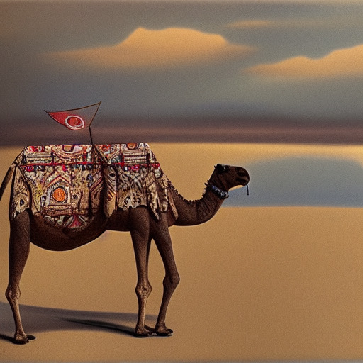
“A camel on a boat in the style of Dali”

Beauty
The best-looking images are those where the mind of the observer has no reliable way to critically judge the success of the image generation process. Abstract images and painting styles that obscure the details work best and can create truly stunning output:
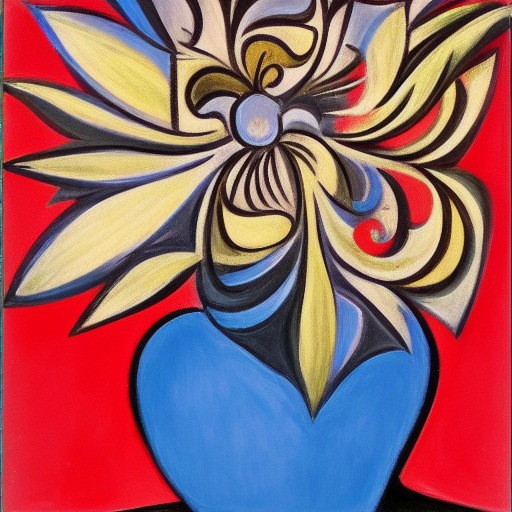
“A flower in Picasso style”
Giving the same prompt again does not repeat the image. Instead, a new, unique picture is generated:
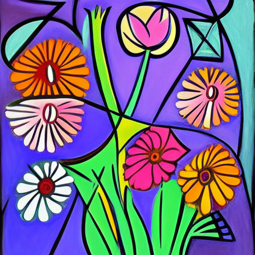
“A flower in Picasso style”
A T-Rex in Dali style (my childrens’ idea) also looks great and undoubtedly has the typical “Dali” look to it:
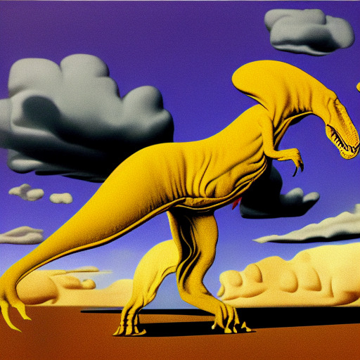
“A t-rex in Dali style”
This Hong Kong skyline in watercolour is striking:
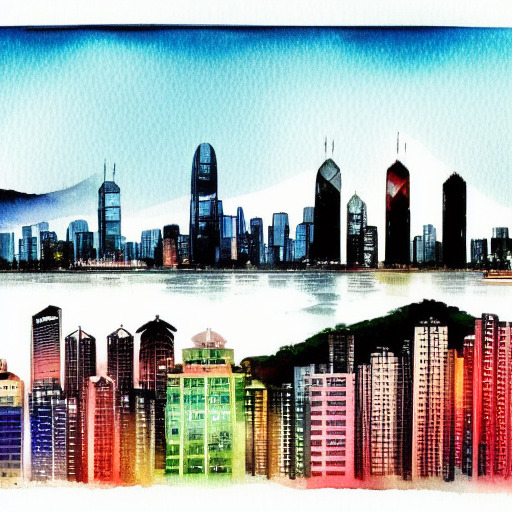
“Hong Kong skyline in watercolor”
And here is another one, specifically asking for a “moody blue” version:
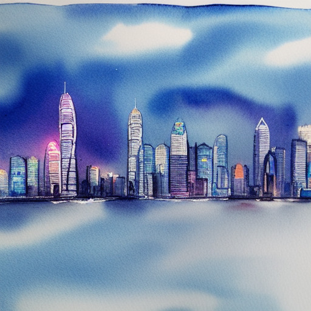
“Hong Kong skyline in moody blue watercolor”
I don’t know about you, but I’d be happy to have this somewhere on a wall. The funny thing is that the skyline is actually recognisable as Hong Kong from some prominent building shapes. Contrast the above with this New York skyline:
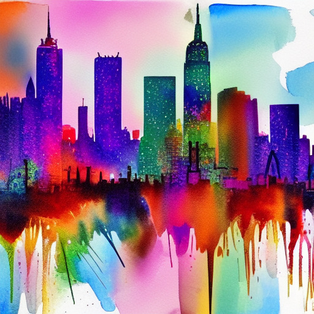
“New York skyline in colorful watercolor”
And a last one that I find particularly good, sent to me by a reader who was also playing with the program.
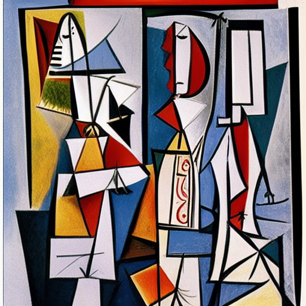
“A wall calendar pages flying off in the wind Picasso style”

How can we tell whether an AI program “thinks” or “feels”? In the recent debate of Blake Lemoine’s claims about LaMDA, a functionalist approach can help us understand machine consciousness and feelings.
What works and what doesn’t
The following image of two dogs running in a park astonished my class as they saw it being generated in seconds in front of their eyes:
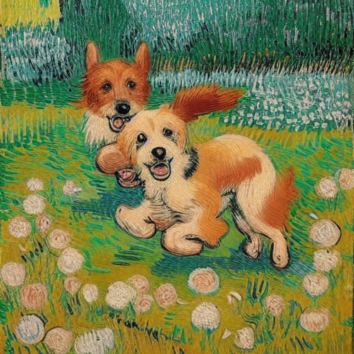
“Cute dogs in a garden running in the style of Van Gogh”
Yet, when you look closely, you’ll see that all sorts of things went wrong with the dogs. The front one has its tail attached behind the knee, and its one ear looks more like a bushy tail (or does this belong to the dog behind?); under its right ear, there seem to be a third mouth that does not belong to any of the two dogs; the dog behind doesn’t seem to have much of a body; and more.
We are willing to overlook these faults because the little dogs are so cute and because the painting style (“van Gogh”) tends to draw so much attention to the brush strokes that it obscures any other details. But the problems become really apparent when we ask for an image that contains faces:
“Three children play in the sky with a pogo stick in a realistic style”
The “sky” of the prompt is not honoured in the picture, but it has other, worse issues: the faces of the children are creepy, to say the least. One has a beard and they all look horribly disfigured. What happened here?
It is a combination of multiple factors. For one, these art generating programs tend to not pay too much attention to details. When you train a neural network on thousands of “children” pictures, it will pick up what is common to all these pictures – the essential characteristics of every child that has ever appeared in a picture: a generally humanoid form, a relatively big head on a relatively small body, colourful clothes, an active pose, playing or running. The smaller the detail in the picture, the less important it generally is, and the less defining it is for the essential character of what constitutes a “child.” This is a problem with all these image generators, that they tend to lack detail. Painting styles like van Gogh or Dali can obscure the problem, but when it comes to the details of a face, it becomes very obvious.

Can AI write philosophy?
I tried out Jasper AI, a computer program that generates natural language text. It turns out that it can create near-perfect output that would easily pass for a human-written undergraduate philosophy paper.
The other thing is that we, as humans, have an incredibly fine-tuned sense for facial features and expressions. Our brain has evolved to reliably pick out the faces of our spouses and kids in a sea of strangers, to finely distinguish between even slightly different faces, to read facial expressions for signs of emotion, approval or disapproval, to scan faces for signs of danger, for hostility, for agitation, for aggression, for love. The more humanoid robots and dolls become without reaching perfection, the greater our discomfort when we encounter them – the well-known “uncanny valley” phenomenon. All these mechanisms kick in the moment we see faces in any picture. Our eyes are drawn to the faces, frantically scanning them for details, for expressions, looking to recognise them, to see if they qualify as partners, as friends, as enemies, or as children in need of protection.
It is this disconnect between the negligence of the AI and our irrepressible urge to analyse faces that causes the image to be so unsatisfactory. All AI programs, except those explicitly trained to generate human faces, have the same problem.
Things immediately become much better when we change the style away from “realistic”:
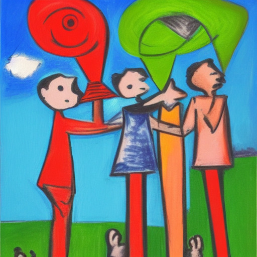
“Three children play in the sky with a pogo stick in a Picasso style”
Does art need emotion?
When we talk about AI generated art, one objection that comes up is that, obviously, AI programs neither understand what they are painting, nor care. Their “art,” the critic would say, does not contain any emotions, it is not driven by a need to communicate a message. It is arbitrary, a pure stylistic exercise without any deeper “meaning.”
This can be disputed, though, in at least three different ways.
First, human artists often refuse to talk about their reasons for creating an artwork and about the emotions that they put into the work. Many great artists are notorious for not wanting to explain their art. “If I wanted to talk about the artwork,” they’ll say, “I would have written an essay instead of painting a picture.”
In addition, many artworks seem to lack an emotional content or a “message” altogether. One would not say that the person who drew the pretty flowers that are printed onto a roll of wallpaper was not an artist. Still, we don’t expect them to have been particularly emotional about painting a wallpaper. Many artworks are just functional or decorative: book covers, public statues, elevator music, art in computer games, or the design elements of aesthetically pleasing IKEA objects. A composer of an endless supermarket background music loop is no less an artist, even if the work did not move him to tears when he created it.
Your ad-blocker ate the form? Just click here to subscribe!
Second, one might argue that AI art does indeed contain emotions. After all, the generating programs were trained on thousands of samples of human-made art and much of that was emotional. Together with capturing the style of van Gogh or the humps of a camel, the program will invariably also store aspects of what we would call the “emotions” or “moods” that are part of the pictures in its training corpus.
Third, one might argue that most of the emotional impact of an artwork is in the eye of the observer. Different viewers will react differently to the same piece of art, bringing to it their own memories, associations and mental images. Some people find Dali’s figures horrible or frightening; others like their technical perfection; others again may find them humorous and amusing, or profound and disturbing. In the same way, an AI artwork may elicit an emotion in the viewer even if the program that created the artwork did not “put” that emotion “into the work.”
All in all, it doesn’t seem like we need to view AI-generated art as being somehow emotionally impoverished or “less art” because of that.
Here is, for example, a picture I generated with my class with the specific intention of creating an “emotional” image.
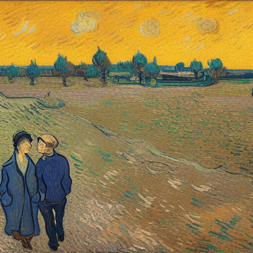
“Two people in a sad situation talking to each other while it's depressively raining in van gogh style”
The rain might be too subtle to detect, but the lost figures in the corner of the picture, their hands in their pockets, the endless, muddy field behind them and the menacing yellow sky all speak a clear language, one might argue. This is not a happy scene.
A friend sent me this picture that they had created. It depicts a king, sitting on his balcony, pensively looking out over the capital of their little kingdom. I find that it does express lots of different emotions and attitudes that one might want to project into a king surveying his kingdom:
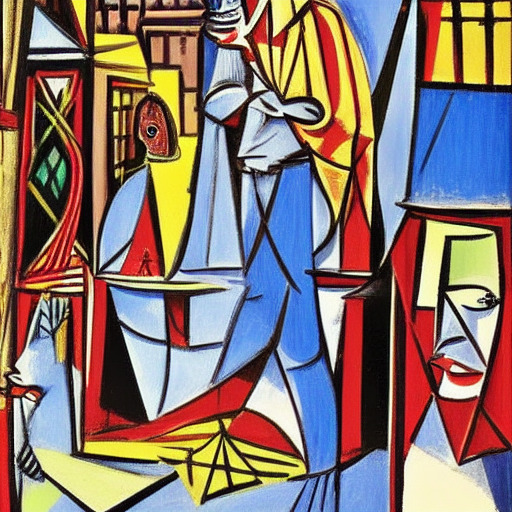
“A king on his balcony in a fairy tale city looking down at a busy Arabian market Picasso style”
Or look at this one, of an old couple sitting together, again sent to me by the same friend:
(Prompt unknown)
One cannot say that this picture does not express any emotion. I personally find it extremely expressive: the way the two look away from each other, the man staring with hostility (curiosity?) at the intruding viewer, while the woman is lost in her own world, arms crossed, refusing to engage with the situation. And yet, there is a closeness between them, a mute familiarity, a silent acceptance of their lives. You may disagree with me, which only proves that, rather than there being not enough emotion in the picture, there likely are too many and complex emotions in there, ready for each viewer to untangle and interpret for themselves.
After requesting and seeing all these artworks, I was curious about the artist who made them. It is fitting that the last image should be a self-portrait of the program that created all this. Here it is.
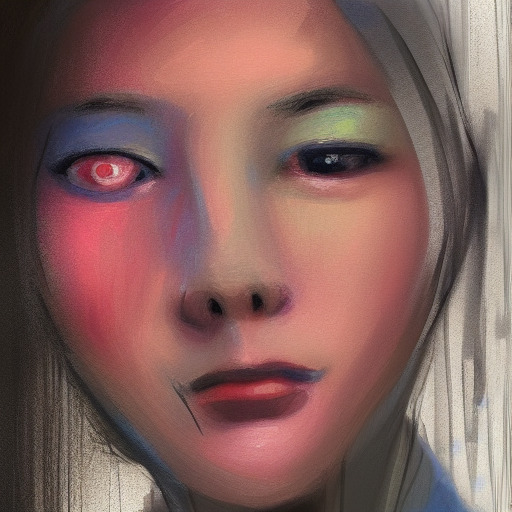
“A portrait of dreamstudio.ai”
That’s it for today! Join me next week when we explore the ethics of AI generated art!
◊ ◊ ◊
What do you think? Is this art? Can computers ever create genuine art? Leave a comment below!